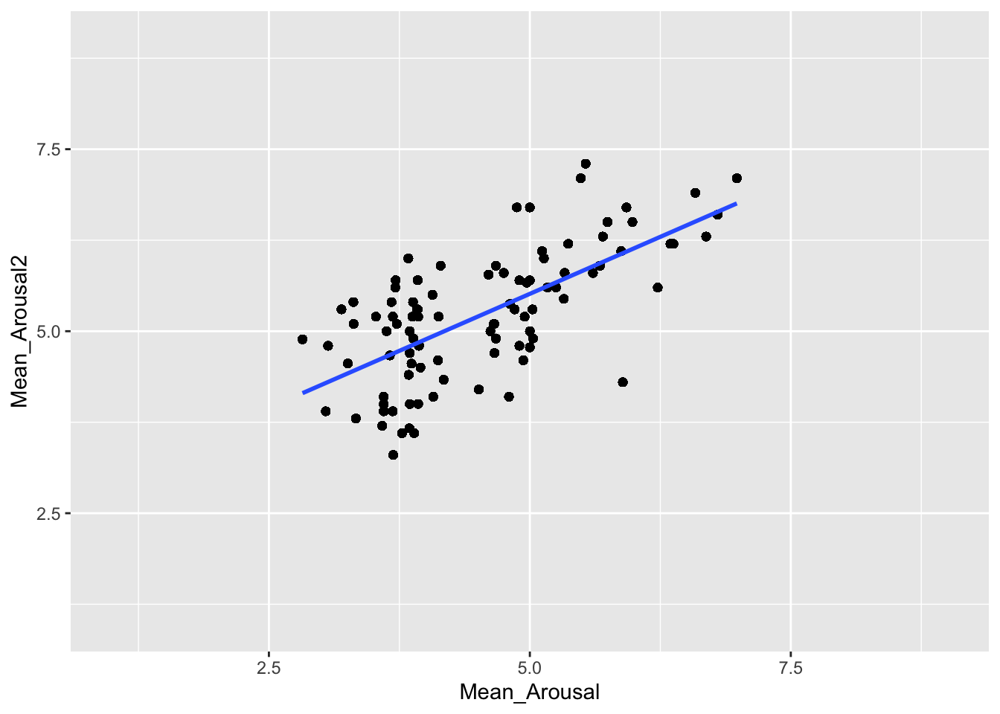
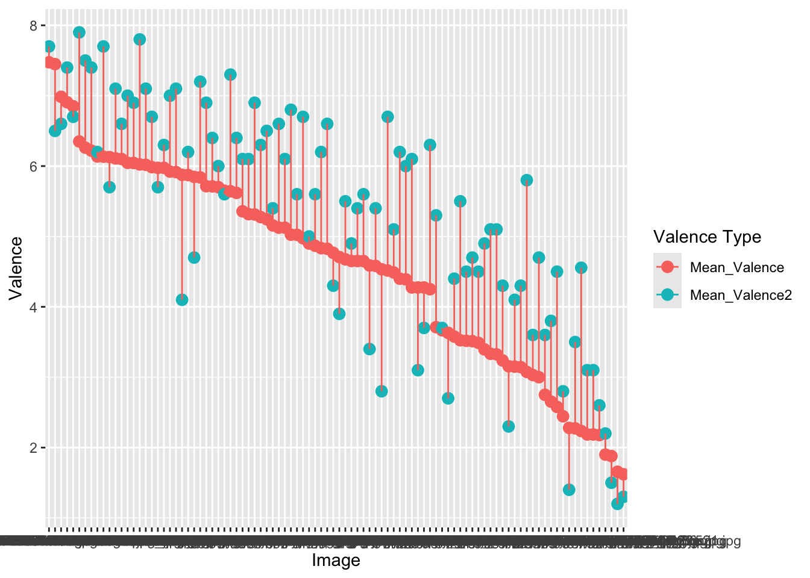
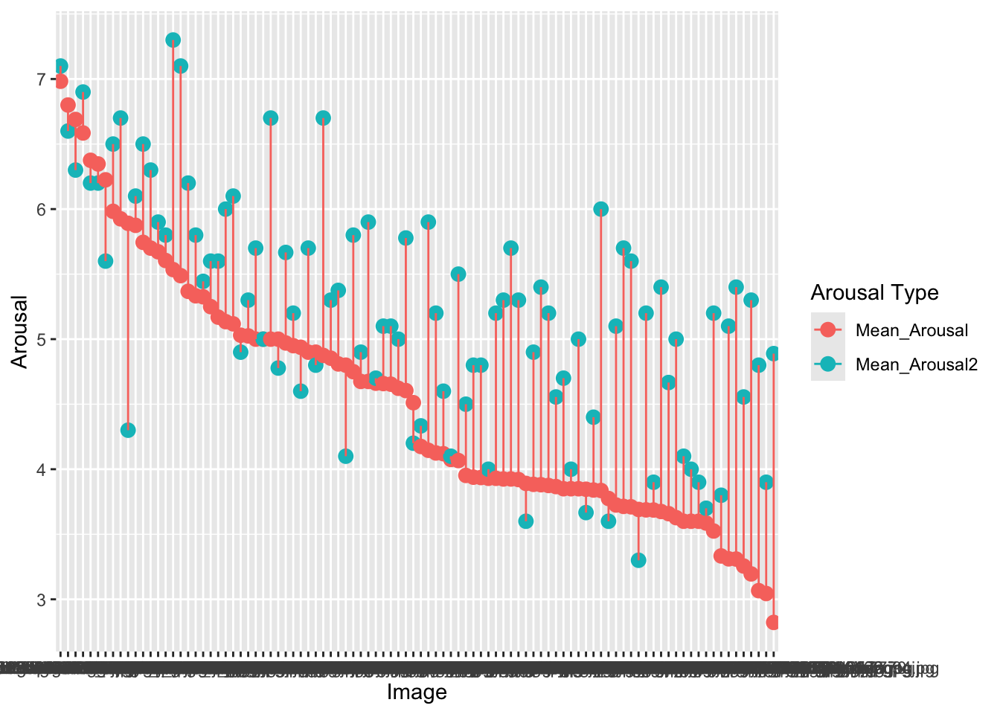

3 Whole-Data Analyses - Classic
This section includes analyses of sustained attention, recognition memory, and affective rating data from the encoding and retrieval components of the ‘classic’ version of the experiment described in ‘Experiments’. All participants from the sample were included in the following analyses. For analyses split by task performance or memory accuracy, see the ‘populations’ tab.
3.1 How often were participants lapsing on the task?
During the go/no-go task (encoding task), participants should have withheld a response when they saw a second presentation of the target image. A lapse occurs when they accidentally make a key press on one of these no-go target images. There were 48 target images shown during this task for each participant, so the maximum number of lapses is 48. Scroll through the table to see how often each participant made this mistake.
| Participant Private ID | total_lapses |
|---|---|
| 12371846 | 14 |
| 12371855 | 13 |
| 12371858 | 14 |
| 12371860 | 14 |
| 12371861 | 14 |
| 12371879 | 16 |
| 12371916 | 21 |
| 12371940 | 13 |
| 12371944 | 11 |
| 12372492 | 8 |
| 12393674 | 10 |
| 12393678 | 6 |
| 12393679 | 10 |
| 12393685 | 15 |
| 12393689 | 10 |
| 12393714 | 11 |
| 12394110 | 12 |
| 12394116 | 21 |
| 12394117 | 4 |
| 12394126 | 7 |
| 12394289 | 14 |
| 12394317 | 6 |
| 12394411 | 6 |
| 12394458 | 11 |
| 12394468 | 13 |
| 12394470 | 17 |
| 12394509 | 8 |
| 12394522 | 1 |
| 12394608 | 3 |
| 12394656 | 14 |
| 12394667 | 15 |
| 12394728 | 8 |
| 12394789 | 14 |
| 12394798 | 7 |
| 12394803 | 9 |
| 12394807 | 16 |
| 12394923 | 6 |
| 12394924 | 6 |
| 12395016 | 4 |
| 12395376 | 12 |
| 12412378 | 17 |
| 12412381 | 13 |
| 12412388 | 13 |
| 12412390 | 5 |
| 12412740 | 7 |
| 12412971 | 14 |
| 12413025 | 13 |
| 12413322 | 18 |
| 12435162 | 4 |
| 12435173 | 7 |
| 12435175 | 21 |
| 12435184 | 13 |
| 12435268 | 10 |
| 12435273 | 6 |
| 12435694 | 8 |
| 12435823 | 17 |
| 12435916 | 11 |
| 12435955 | 6 |
##
## Welch Two Sample t-test
##
## data: laps_tot$Correct and laps_tot$Lapse
## t = 8.0263, df = 78.648, p-value = 7.96e-12
## alternative hypothesis: true difference in means is not equal to 0
## 95 percent confidence interval:
## 0.2823132 0.4685282
## sample estimates:
## mean of x mean of y
## 0.0838491 -0.2915716
## Generalized linear mixed model fit by maximum likelihood (Laplace
## Approximation) [glmerMod]
## Family: binomial ( logit )
## Formula: hits ~ zrt + (1 + zrt | `Participant Private ID`)
## Data: mem_att
##
## AIC BIC logLik deviance df.resid
## 2560.9 2589.4 -1275.4 2550.9 2191
##
## Scaled residuals:
## Min 1Q Median 3Q Max
## -3.0149 -1.1182 0.5049 0.6515 1.2063
##
## Random effects:
## Groups Name Variance Std.Dev. Corr
## Participant Private ID (Intercept) 0.3393 0.5825
## zrt 0.0208 0.1442 -1.00
## Number of obs: 2196, groups: Participant Private ID, 47
##
## Fixed effects:
## Estimate Std. Error z value Pr(>|z|)
## (Intercept) 0.98879 0.09929 9.959 <2e-16 ***
## zrt -0.04168 0.05477 -0.761 0.447
## ---
## Signif. codes: 0 '***' 0.001 '**' 0.01 '*' 0.05 '.' 0.1 ' ' 1
##
## Correlation of Fixed Effects:
## (Intr)
## zrt -0.364
## optimizer (Nelder_Mead) convergence code: 0 (OK)
## boundary (singular) fit: see help('isSingular')## Generalized linear mixed model fit by maximum likelihood (Laplace
## Approximation) [glmerMod]
## Family: binomial ( logit )
## Formula: hits ~ z_mem + (1 + z_mem | `Participant Private ID`)
## Data: mem_att
##
## AIC BIC logLik deviance df.resid
## 2561.8 2590.3 -1275.9 2551.8 2191
##
## Scaled residuals:
## Min 1Q Median 3Q Max
## -2.8496 -1.0879 0.4979 0.6429 1.1051
##
## Random effects:
## Groups Name Variance Std.Dev. Corr
## Participant Private ID (Intercept) 0.33209 0.5763
## z_mem 0.02117 0.1455 0.29
## Number of obs: 2196, groups: Participant Private ID, 47
##
## Fixed effects:
## Estimate Std. Error z value Pr(>|z|)
## (Intercept) 0.98724 0.09850 10.02 <2e-16 ***
## z_mem 0.10176 0.05471 1.86 0.0629 .
## ---
## Signif. codes: 0 '***' 0.001 '**' 0.01 '*' 0.05 '.' 0.1 ' ' 1
##
## Correlation of Fixed Effects:
## (Intr)
## z_mem 0.118## Generalized linear mixed model fit by maximum likelihood (Laplace
## Approximation) [glmerMod]
## Family: binomial ( logit )
## Formula: hits ~ zv + (1 + zv | `Participant Private ID`)
## Data: mem_att
##
## AIC BIC logLik deviance df.resid
## 2562.5 2591.0 -1276.3 2552.5 2191
##
## Scaled residuals:
## Min 1Q Median 3Q Max
## -2.7791 -1.1034 0.5055 0.6411 1.1484
##
## Random effects:
## Groups Name Variance Std.Dev. Corr
## Participant Private ID (Intercept) 0.33180 0.5760
## zv 0.01819 0.1349 0.80
## Number of obs: 2196, groups: Participant Private ID, 47
##
## Fixed effects:
## Estimate Std. Error z value Pr(>|z|)
## (Intercept) 0.98570 0.09850 10.008 <2e-16 ***
## zv -0.02190 0.05424 -0.404 0.686
## ---
## Signif. codes: 0 '***' 0.001 '**' 0.01 '*' 0.05 '.' 0.1 ' ' 1
##
## Correlation of Fixed Effects:
## (Intr)
## zv 0.260## Generalized linear mixed model fit by maximum likelihood (Laplace
## Approximation) [glmerMod]
## Family: binomial ( logit )
## Formula: hits ~ za + (1 + za | `Participant Private ID`)
## Data: mem_att
##
## AIC BIC logLik deviance df.resid
## 2562.2 2590.7 -1276.1 2552.2 2191
##
## Scaled residuals:
## Min 1Q Median 3Q Max
## -2.6205 -1.0977 0.5023 0.6401 1.2416
##
## Random effects:
## Groups Name Variance Std.Dev. Corr
## Participant Private ID (Intercept) 0.32952 0.5740
## za 0.01063 0.1031 1.00
## Number of obs: 2196, groups: Participant Private ID, 47
##
## Fixed effects:
## Estimate Std. Error z value Pr(>|z|)
## (Intercept) 0.98155 0.09804 10.011 <2e-16 ***
## za -0.03736 0.05283 -0.707 0.479
## ---
## Signif. codes: 0 '***' 0.001 '**' 0.01 '*' 0.05 '.' 0.1 ' ' 1
##
## Correlation of Fixed Effects:
## (Intr)
## za 0.252
## optimizer (Nelder_Mead) convergence code: 0 (OK)
## boundary (singular) fit: see help('isSingular')## Generalized linear mixed model fit by maximum likelihood (Laplace
## Approximation) [glmerMod]
## Family: binomial ( logit )
## Formula: hits ~ zv + I(zv^2) + (1 + zv | `Participant Private ID`)
## Data: mem_att
##
## AIC BIC logLik deviance df.resid
## 2564.4 2598.5 -1276.2 2552.4 2190
##
## Scaled residuals:
## Min 1Q Median 3Q Max
## -2.7677 -1.1067 0.5039 0.6406 1.1547
##
## Random effects:
## Groups Name Variance Std.Dev. Corr
## Participant Private ID (Intercept) 0.33189 0.5761
## zv 0.01705 0.1306 0.82
## Number of obs: 2196, groups: Participant Private ID, 47
##
## Fixed effects:
## Estimate Std. Error z value Pr(>|z|)
## (Intercept) 1.00639 0.10893 9.239 <2e-16 ***
## zv -0.02803 0.05544 -0.505 0.613
## I(zv^2) -0.02087 0.04668 -0.447 0.655
## ---
## Signif. codes: 0 '***' 0.001 '**' 0.01 '*' 0.05 '.' 0.1 ' ' 1
##
## Correlation of Fixed Effects:
## (Intr) zv
## zv 0.123
## I(zv^2) -0.427 0.246## `geom_smooth()` using formula = 'y ~ x'## `geom_smooth()` using formula = 'y ~ x'
## Warning in cor.test.default(mem_att2_long$Valence[mem_att2_long$Valence_Type ==
## : Cannot compute exact p-value with ties##
## Spearman's rank correlation rho
##
## data: mem_att2_long$Valence[mem_att2_long$Valence_Type == "Mean_Valence"] and mem_att2_long$Valence[mem_att2_long$Valence_Type == "Mean_Valence2"]
## S = 25974, p-value < 2.2e-16
## alternative hypothesis: true rho is not equal to 0
## sample estimates:
## rho
## 0.823834## Warning in cor.test.default(mem_att2_long2$Arousal[mem_att2_long2$Arousal_Type
## == : Cannot compute exact p-value with ties##
## Spearman's rank correlation rho
##
## data: mem_att2_long2$Arousal[mem_att2_long2$Arousal_Type == "Mean_Arousal"] and mem_att2_long2$Arousal[mem_att2_long2$Arousal_Type == "Mean_Arousal2"]
## S = 52773, p-value = 1.787e-12
## alternative hypothesis: true rho is not equal to 0
## sample estimates:
## rho
## 0.6420729## Generalized linear mixed model fit by maximum likelihood (Laplace
## Approximation) [glmerMod]
## Family: binomial ( logit )
## Formula: hits ~ zv2 + (1 + zv2 | `Participant Private ID.x`)
## Data: mem_att2
##
## AIC BIC logLik deviance df.resid
## 24350.7 24390.7 -12170.4 24340.7 21955
##
## Scaled residuals:
## Min 1Q Median 3Q Max
## -4.5739 -0.9874 0.4522 0.6473 1.3141
##
## Random effects:
## Groups Name Variance Std.Dev. Corr
## Participant Private ID.x (Intercept) 0.4753 0.6894
## zv2 0.1553 0.3941 0.14
## Number of obs: 21960, groups: Participant Private ID.x, 47
##
## Fixed effects:
## Estimate Std. Error z value Pr(>|z|)
## (Intercept) 1.041668 0.102086 10.204 <2e-16 ***
## zv2 -0.007337 0.060159 -0.122 0.903
## ---
## Signif. codes: 0 '***' 0.001 '**' 0.01 '*' 0.05 '.' 0.1 ' ' 1
##
## Correlation of Fixed Effects:
## (Intr)
## zv2 0.134## Generalized linear mixed model fit by maximum likelihood (Laplace
## Approximation) [glmerMod]
## Family: binomial ( logit )
## Formula: hits ~ za2 + (1 + za2 | `Participant Private ID.x`)
## Data: mem_att2
##
## AIC BIC logLik deviance df.resid
## 24197.6 24237.6 -12093.8 24187.6 21955
##
## Scaled residuals:
## Min 1Q Median 3Q Max
## -3.7821 -0.9362 0.4500 0.6493 1.6601
##
## Random effects:
## Groups Name Variance Std.Dev. Corr
## Participant Private ID.x (Intercept) 0.4681 0.6842
## za2 0.1827 0.4274 0.04
## Number of obs: 21960, groups: Participant Private ID.x, 47
##
## Fixed effects:
## Estimate Std. Error z value Pr(>|z|)
## (Intercept) 1.03992 0.10133 10.263 <2e-16 ***
## za2 0.02090 0.06486 0.322 0.747
## ---
## Signif. codes: 0 '***' 0.001 '**' 0.01 '*' 0.05 '.' 0.1 ' ' 1
##
## Correlation of Fixed Effects:
## (Intr)
## za2 0.041